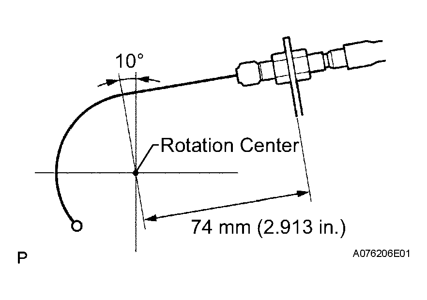

Throttle Body: Installation
- INSTALL THROTTLE BODY ASSEMBLY
- Connect the No. 1 water by-pass hose.
- Connect the No. 2 water by-pass hose.
- Install a new gasket into the intake manifold.
- Install the throttle body and accelerator control bracket with the bolt and 2 nuts.
Torque: 30 N*m (306 kgf*cm, 22 ft.*lbf)
- Install the wire harness clamp.
- Connect the throttle position sensor connector (for manual transaxle).
- Connect the IAC valve connector.
- INSTALL TRANSMISSION OIL FILLER TUBE SUBASSEMBLY (for Automatic Transaxle)
- Install a new O-ring onto the transmission oil filler tube.
- Install the transmission oil filler tube with the bolt.
Torque: 5.5 N*m (56 kgf*cm, 49 in.*lbf)
- Install the oil cooler tube clamp with the bolt.
Torque: 5.5 N*m (56 kgf*cm, 49 in.*lbf)
- Connect the hose.
- Connect the throttle position sensor connector.
- Install the oil dipstick.
- INSTALL ACCELERATOR CONTROL CABLE ASSEMBLY
- Install the accelerator control cable as shown in the illustration.

Courtesy of © TOYOTA, LICENSE AGREEMENT TMS1002Torque: 13 N*m (133 kgf*cm, 10 ft.*lbf)
- Install the accelerator control cable as shown in the illustration.
- INSTALL AIR CLEANER ASSEMBLY
- Install the air cleaner case to the air cleaner bracket with the 3 bolts.
Torque: 7.8 N*m (80 kgf*cm, 69 in.*lbf)
- Connect the air cleaner inlet to the engine compartment with the bolt.
Torque: 7.5 N*m (76 kgf*cm, 66 in.*lbf)
- Tighten the hose clamp.
- Connect the MAF meter connector.
- Connect the purge VSV connector.
- Attach the wire harness clamp.
- Connect the No. 2 purge line hose.
- Connect the ventilation hose.
- Connect the No. 1 purge line hose.
- Lock the 2 clamp hooks.
- Install the air cleaner case to the air cleaner bracket with the 3 bolts.
- CONNECT CABLE TO NEGATIVE BATTERY TERMINAL
- ADD ENGINE COOLANT (See ON-VEHICLE INSPECTION )
- CHECK FOR ENGINE COOLANT LEAKS
- Check for engine coolant leaks (See ON-VEHICLE INSPECTION ).